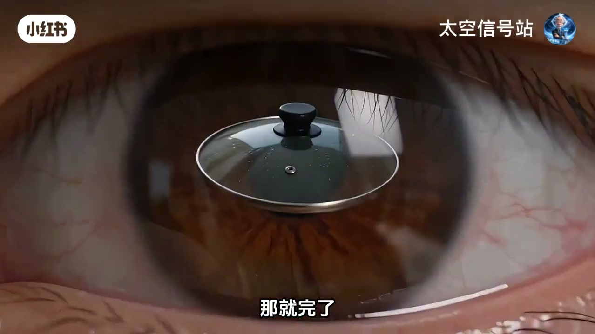
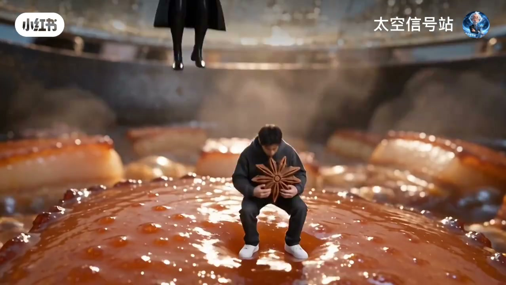
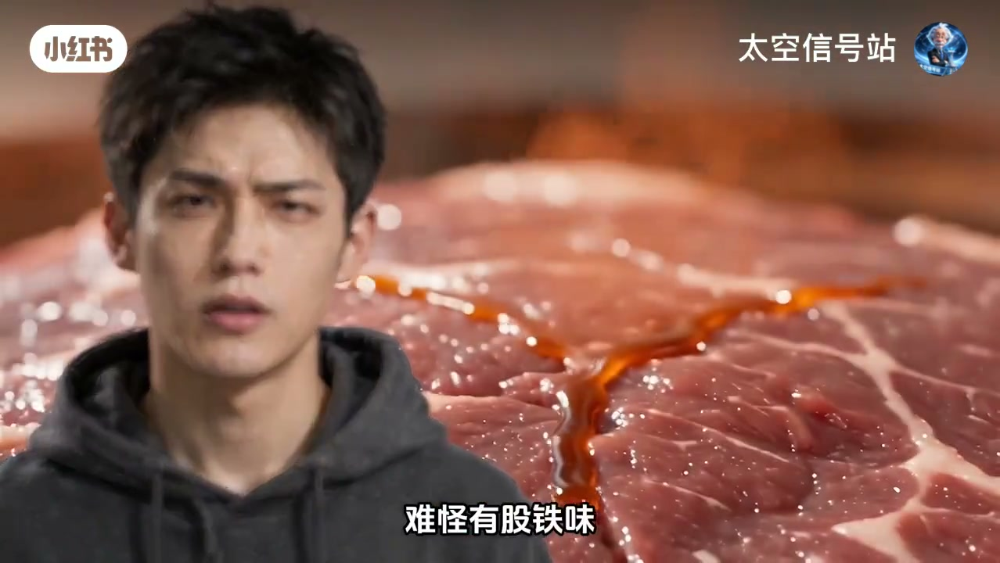
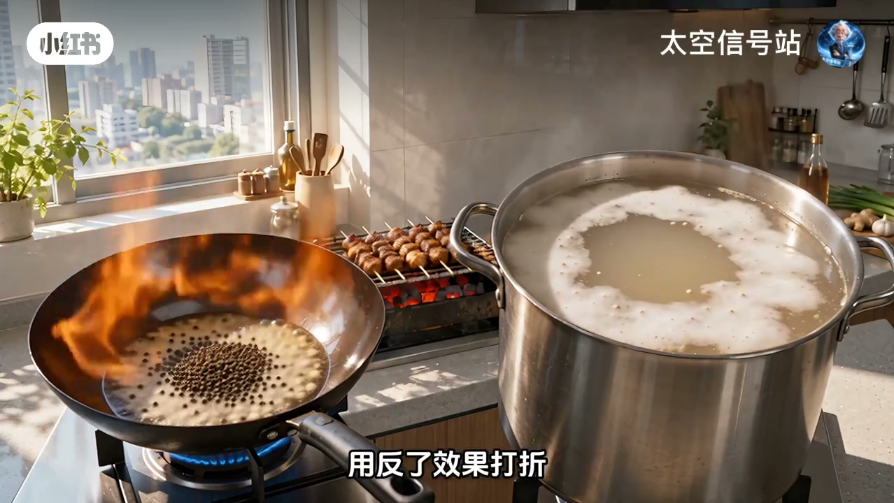
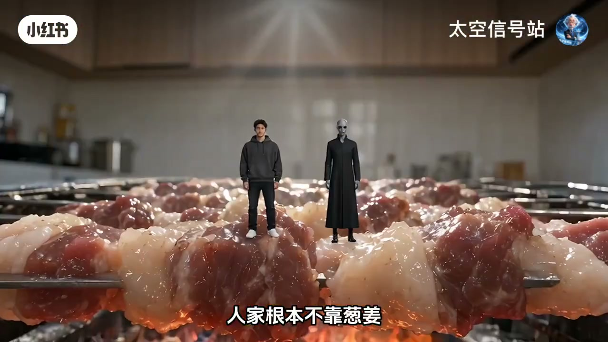
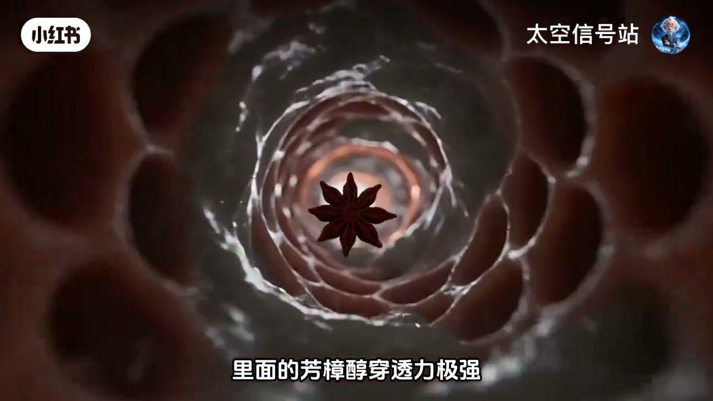
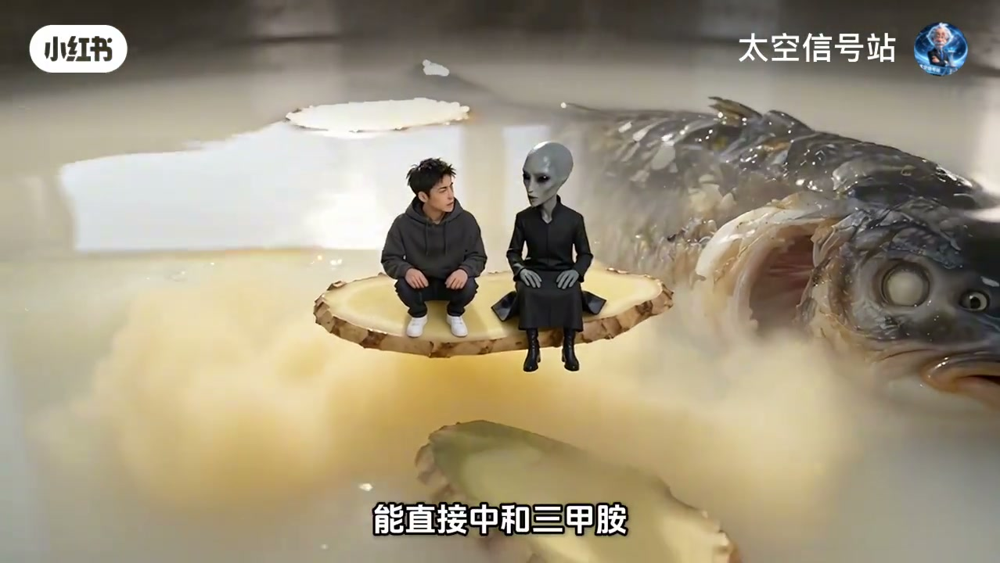
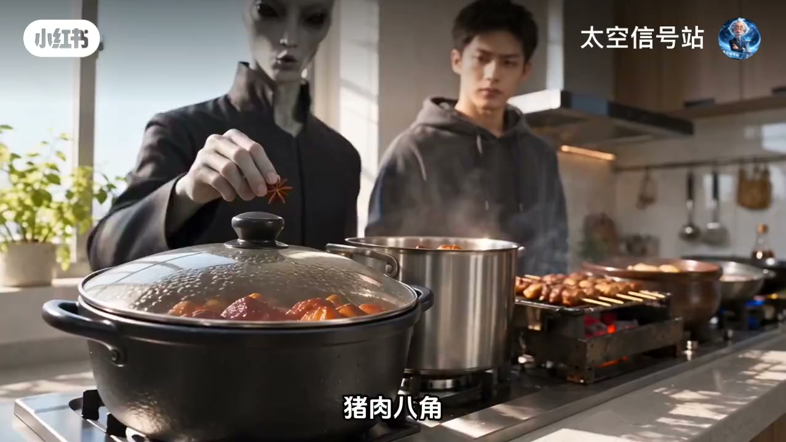

葱姜蒜不是万能钥匙
料酒、葱姜蒜有用，但猪牛羊鸡鱼的腥是五类不同物质；同锅猛扔，大多白费劲。

[00:12] 开场：五种肉腥源不同，葱姜蒜像一把钥匙开所有锁——大多白费
Five meats, five odor chemistries—ginger/scallion alone rarely unlocks all.
猪肉八角 · 牛肉胡椒迷迭香
猪骚在脂肪，八角中茴香脑与腥味分子接近，在嗅觉受体上抢位，还能助蛋白分解。牛肉血红素铁味重、纤维密，葱姜难渗入；胡椒碱解铁锈气并松胶原，迷迭香抗氧化减少异味生成。炒牛用脂溶更强的黑胡椒，炖牛用更易水溶渗透的白胡椒。

[00:55] 猪肉本命：八角——抢位盖腥，红烧酥烂它领一半功
Pork pairs with star anise—competes on smell receptors; helps braise tenderness.

[01:40] 牛肉认胡椒+迷迭香；炒用黑胡椒，炖用白胡椒，别用反
Beef: pepper + rosemary; black for stir-fry, white for stews.
羊肉孜然 · 鸡肉花椒
羊膻在脂肪里的支链脂肪酸，葱解决不了；孜然里的香气阈值更低，同浓度鼻子先闻孜然。鸡肉腥从骨髓缝渗出，花椒麻味成分穿透力强，能锁腥还不毁清鲜。

[02:25] 羊肉本命：孜然+小茴香——嗅觉阈值碾压膻味脂肪酸
Lamb: cumin + fennel—lower odor threshold swamps gamey acids.

[03:10] 鸡肉本命：花椒——往骨膜钻，降异味吸附还不毁鸡鲜
Chicken: Sichuan pepper—penetrates to mute off-notes without killing freshness.
鱼：炖白芷、烧紫苏
鱼腥元凶三甲胺藏在腮、腹腔、黑膜、血里；淡水还有土臭素泥腥。海鱼炖汤用白芷中和；淡水红烧换紫苏专克泥腥。葱姜是万金油，哪条路都能走，但都走不远。

[03:40] 鱼腥看三甲胺+泥腥土臭素；姜片只在表面够不着源头
Fish: TMA + geosmin; surface ginger never reaches the source.

[04:00] 炖鱼白芷、烧鱼紫苏——别搞反
Angelica for fish soups; perilla for braises—don’t swap.

[04:20] 复盘：猪八角、牛胡椒迷迭香、羊孜然茴香、鸡花椒、鱼白芷/紫苏
Recap pairs: pork–anise, beef–pepper/rosemary, lamb–cumin, chicken–peppercorn, fish–angelica/perilla.
小结
一锅好肉不靠料多，靠一味料正好对上。